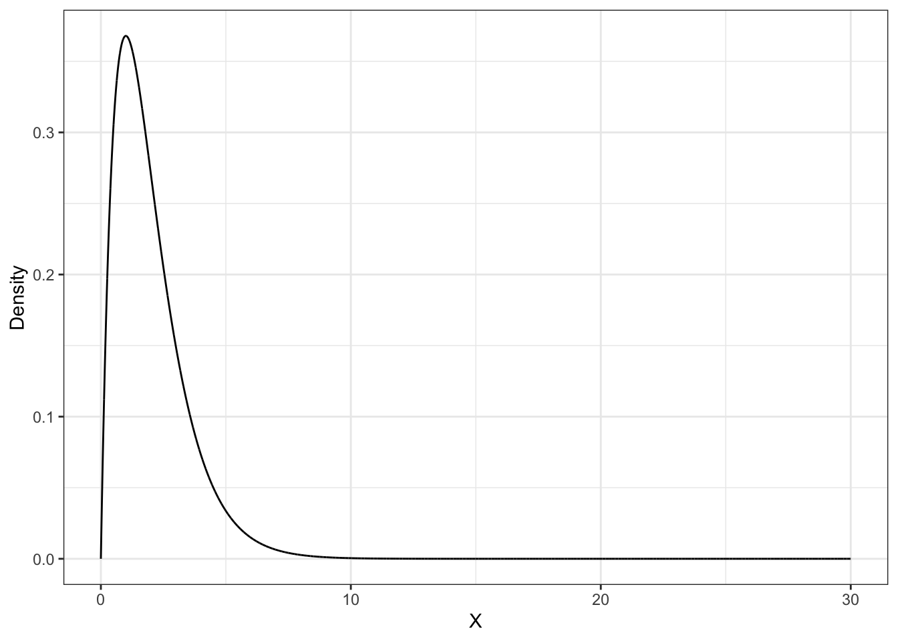

load(url("link/to/file"))HW6 // Случайный эксперимент. Случайные величины
Основные задания
#1
По ссылке расположен файл .RData с симуляцией трёх восьмигранных игральный кубиков dice1, dice2 и dice3. Один из них является честным, другой — нечестным, а третий — невозможным.
Выясните, какой именно каким является.
Симуляции представляют собой функции, которые принимают на вход число бросаний кубика n и возвращают вектор длины n с исходами бросаний кубиков.
Загрузить файл
.RData
Для загрузки симуляций в окружение воспользуйтесь следующим кодом:
В качестве ответа для самопроверки введите через запятую номера кубиков в следующем порядке — честный, нечестный, невозможный. Формат ввода 1,2,3. Проверка игнорирует все пробелы.
Подсказки
Как делать задание?
- Загрузите файл
.RDataс помощью кода из задания — в окружении должны отобразиться три функцииdice1,dice2иdice3. - Используя классический подход к вероятности, рассчитайте ожидаемые вероятности, с которыми будут выпадать значения при бросании честного игрального кубика.
- Используя статистический подход к вероятности, рассчитайте наблюдаемые вероятности, с которыми выпадают значения при бросании каждого из трех игральных кубиков.
- Сопоставьте результаты и определите, какой кубик является честным, какой — нечестным, а какой — невозможным.
Что надо сделать?
- Загрузить файл с симуляциями с помощью кода
load(url("https://github.com/angelgardt/wlm2023/raw/master/data/hw6/dice.RData")) - Считая, что честный кубик тот, на котором выпадение каждого числа очков равновероятно, рассчитайте ожидаемые вероятности выпадения каждой грани для восьмигранного кубика.
- Используя загруженные функции, проведите достаточно большое количество испытаний каждого кубика — пример использования функции для 100 бросаний первого кубика:
dice1(100). - Постройте таблицу наблюдаемых частот для каждого кубика и проверьте, совпадают ли полученные результаты с рассчетом классической вероятности.
Ответ неверный
- Проверьте, что вы ввели тольно номера кубиков, то есть ваш ответ соответствует формату
1,2,3, а неdice1,dice2,dice3 - Проверьте, что вы провели достаточное количество испытаний, чтобы получить точные оценки вероятностей.
#2
Рассчитайте математическое ожидание случайной величины, имеющей следующую функцию вероятности:
| \(x\) | \(0\) | \(2\) | \(3\) | \(6\) |
|---|---|---|---|---|
| \(\mathbb{P}(X=x)\) | \(0.3\) | \(0.4\) | \(0.2\) | \(0.1\) |
Отсюда можно скачать таблицу в формате CSV.
В качестве ответа для самопроверки введите получившееся значение математического ожидания.
Подсказки
Как делать задание?
- Загрузите таблицу, задающую функцию вероятности случайной величины.
- В таблице есть две колонки:
x— значение случайной величины,p— вероятность, с которой случайная величина принимает данное значение. - Используя формулу математического ожидания для дискретной случайной величины, рассчитайте математическое ожидание данной случайной величины.
Что надо сделать?
- Загрузить таблицу, задающую функцию вероятности случайной величины, с помощью функции
read_csv()илиread.csv(). - В таблице есть две колонки:
x— значение случайной величины,p— вероятность, с которой случайная величина принимает данное значение. - Математическое ожидание дискретной случайной величины определяется следующим образом:
\[ \mathbb{E}(X) = \sum_{i=1}^{n} x_ip_i \] * Используя эту формулу и знания о работе с датафреймами, вычислите математическое ожидание.
Ответ неверный
- Проверьте рассчеты — в результате вычислений должно получатся целое число.
#3
Для случайной величины из предыдущего задания рассчитайте её дисперсию.
В качестве ответа для самопроверки введите получившееся значение дисперсии.
Подсказки
Как делать задание?
- Добавьте в загруженную таблицу новую колонку, необходимую для расчета дисперсии.
- Используя формулу дисперсии для дискретной случайной величины, рассчитайте дисперсию данной случайной величины.
Что надо сделать?
- Дисперсия случайной величины определяется следующим образом:
\[ \text{var}(X) = \mathbb{E}(X^2) - \big(\mathbb{E}(X)\big)^2 \]
- Необходимо рассчитать значения квадрата случайной величины на основе данных в загруженной таблицы значений
x - Используя вероятности
pи значения из добавленной колонки, рассчитать математическое ожидание квадрата случайной величины. - По формуле дисперсии случайной величины рассчитать дисперсию данной случайной величины.
Ответ неверный
- Проверьте рассчеты — в результате вычислений должно получатся целое число.
#4
Данные некоторого эксперимента собираются на трёх различных компьютерах, никак не взаимодействующих друг с другом. Вероятность того, что при записи данных на первом компьютере случится ошибка равна 0.2, на втором — 0.1, на третьем — 0.15.
- Какова вероятность, что при обработке всех данных эксперимента будут обнаружены битые (содержащие ошибки записи) данные со всех трех компьютеров?
- В течение сбора данных эксперимента на первом компьютере было записано 30 файлов, на втором — 20, на третьем — 35. Сколько битых (содержащих ошибки записи) файлов ожидается к моменту обработки данных?
Считайте, что наличие ошибок записи зависит только от компьютера, на котором проводится эксперимент. Обработка данных начинается после сбора всех данных эксперимента.
Для самопроверки в поле ответа введите два числа, разделенные запятой. Первое число — ответ на пункт а, округленный до тысячных, второе — ответ на пункт b, округленный до целого. В качестве десятичного разделителя используйте точку.
Подсказки
Как делать задание?
- Определите, с каким событиями вы работете — зависимыми или независимыми.
- Выясните, что представляет собой вероятность, которая должна быть подсчитать в пункте а.
- Вспомните, как для таких событий ведет себя вероятность, которую вам необходимо вычислить.
Что надо сделать?
- Событием в данной ситуации является ошибка в записи данных. Так как компьютеры не взаимодействуют друг с другом, то события можно считать независимыми.
- По условию нас интересует вероятность пересечения трех независимых событий. Необходимо вычислить её по соответствующей формуле.
- Так как статистическая интерпретация вероятности говорит нам, что \(P(A) \approx \frac{n(A)}{n}\), то можно вычислить долю событий, в которых реализовалось некоторое событие — это и требуется в пункте b.
Ответ неверный
- Проверьте, что во вводимом ответе одно число отделено от другого запятой.
- Проверьте, что в качестве десятичного разделителя используется точка.
- Проверьте, что первое число (пункт a) округлено до тысячных, а второе (пункт b) — до целого.
#5
Три психолога независимо друг от друга выполняют тестовое задание на позицию продуктового аналитика. У них разная степень прошаренности в статистике, поэтому вероятности того, что они выполнят тестовое задание правильно равны 0.8, 0.7 и 0.6 соответственно.
- Какова вероятность, что никто из кандидатов не выполнит правильно тестовое задание?
- Какова вероятность, что хотя бы один из кандидатов выполнит правильно тестовое задание?
Для самопроверки в поле ответа введите два числа, разделенные запятой. Первое число — ответ на пункт а, второе — ответ на пункт b. Оба значения округлите до тысячных. В качестве десятичного разделителя используйте точку.
Подсказки
Как делать задание?
- Определите, как соотносятся события, вероятности которых даны в задании, и события, о которых спрашивается в пункте а.
- Вычислите эту вероятность, учитывая допущение в связанности событий друг с другом, указанное в задании.
- Определите, как соотносится событие, вероятность которого необходимо вычислить в пункте b, с событием, вероятность которого вы вычислили в пункте a.
Что надо сделать?
- В пункте a спрашивается про вероятность пересечения событий, обратных к тем, вероятности которых известны из задания. Необходимо сначала расчитать вероятности события \(A_i\), зная вероятности событий \(\bar A_i\).
- По условию интересующие нас события никак не влияют друг на друга, а интересует нас вероятность пересечения событий \(\bar A_i\). По соответствующей формуле необходимо вылислить искомую вероятность.
- Событие, о котором говорится в пункте b, является обратным к событию, вероятность которого рассчитана в пункте a. Действовать в этом случае нужно аналогично первому шагу пункта a.
Ответ неверный
- Проверьте, что во вводимом ответе одно число отделено от другого запятой.
- Проверьте, что в качестве десятичного разделителя используется точка.
- Проверьте, что обы числа округлены до тысячных.
#6
На специальности 37.03.01 «Психология» в бакалавриате некоего вуза учится 1500 студентов: 520 на первом курсе, 480 на втором и 315 на третьем. Вероятности того, что студент первого, второго, третьего и четвертого курса получил при освоении курса статистики «отлично», равны соответствено 0.6, 0.8, 0.7 и 0.65. В курилке мы случайным образом завели беседу с одним из студентов-психологов. Какова вероятность, что у него в зачетке «отлично» по статистике?
Для самопроверки в поле ответа введите получившееся значение, округленное до тысячных. В качестве десятичного разделителя используйте точку.
Подсказки
Как делать задание?
- Рассчитайте недостающее количество на основе входных данных.
- Пользуясь статистическим подходом к вероятности, рассчитайте вероятность принадлежности студента к определенному курсу.
- Интересующее нас событие — отлично в зачетке студента. Рассчитайте полную вероятность этого события.
Что надо сделать?
- Для проведения расчетов нам недостает количества студентов, обучающихся на четвертом курсе. Сперва вычислите его.
- Затем определите вероятность, с которой случайный студент принадлежит к определенному курсу, пользуясь статистическим подходом к вероятности (\(P(A) = \frac{n(A)}{n}\)).
- Далее по формуле полной вероятности \(P(A) = P(A|H_1)P(H_1) + P(A|H_2)P(H_2) + P(A|H_3)P(H_3) + P(A|H_4)P(H_4)\), вычислите вероятность интересующего нас события. Условные вероятности заданы условием задания.
Ответ неверный
- Проверьте, что в качестве десятичного разделителя используется точка.
- Проверьте, что значение округлено до тысячных.
- Проверьте вычисления — промежуточные результаты округлять не нужно.
#7
Российский ПЦР-тест на COVID-19 SARS-CoV-2, с помощью которого проводится экспресс-анализ для выявления коронавирусной инфекции, обладает 98% чувствительностью и 98% специфичностью. Будем считать, что в России проживает [согласно грубым оценкам] 146 700 000 человек, из которых в среднем 1 550 000 заражено COVID-19. Вы сдали тест SARS-CoV-2 на коронавирус, который показал положительный результат. Какова вероятность, что вы действительно заражены коронавирусной инфекцией?
Чувствительность и специфичность
- Чувствительность клинического теста показывает вероятность того, что больной субъект будет идентифицирован как больной.
- Специфичность клинического теста показывает вероятность того, что здоровый субъект будет идентифицирован как здоровый.
Подробнее можно почитать тут.
Для самопроверки в поле ответа введите получившееся значение, округленное до сотых. В качестве десятичного разделителя используйте точку.
Подсказки
Как делать задание?
- Задайте условные обозначения для событий, рассматриваемых в задаче, и той, которую необходимо найти.
- Запишите формулу, по которой вычисляется искомая вероятность.
- Выясните, каких элементов формулы не хватает для расчета.
- Одна из вероятностей выясчисляется как вероятность обратного к событию, определяетого чувствительностью или специфичностью.
Что надо сделать?
- Определим события следующим образом: ILL — болен, HEALTH — здоров, plus — положительный рзультат ПЦР-теста, minus — отрицательный результат ПЦР-теста. Тогда необходимо найти вероятность \(P(\text{ILL}|\text{plus})\).
- Известны из условия вероятности \(P(\text{plus}|\text{ILL})\) и \(P(\text{minus}|\text{HEALTH})\)
- Вычисляемы из условия вероятности \(P(\text{ILL})\), \(P(\text{HEALTH})\) и \(P(\text{plus}|\text{HEALTH})\).
- Запишите для вероятности \(P(\text{ILL}|\text{plus})\) формулу Байеса, если общий вид этой формулы таков:
\[ P(B|A) = \frac{P(A|B) \cdot P(B)}{P(A|B) \cdot P(B) + P(A|\bar B) \cdot P(\bar B)} \]
- Вычислите необходимые элементы этой формулы и сам ответ по формуле.
Ответ неверный
- Проверьте, что в качестве десятичного разделителя используется точка.
- Проверьте, округлен ли ответ до сотых по математическим правилам.
- Проверьте вычисления: чувствительность и/или специфичность не используются в расчете непосредственно.
#8
Какова вероятность, что сотрудник случайно пройдет квалификационный тест, который включает в себя 30 тестовых вопросов с пятью вариантами ответа, если в каждом вопросе только один правильный ответ, а для прохождения теста необходимо набрать минимум 25 правильных ответов? Считайте, что тест хорошо сконструирован, поэтому все альтернативы в каждом вопросе равнозначны, а вопросы не связаны друг с другом.
Для самопроверки в поле ответа введите получившееся значение в научном формате записи числа (scientific notation).
Пример, как выглядит научный формат в жизни: \(2.3\times10^{-12}\).
Пример, как это число вводить в поле ответа: 2.3*10^-12.
Мантиссу (число слева от знака умножения) округлите до сотых. В качестве десятичного разделителя используйте точку. Подробнее о научном формате записи чисел тут.
Подсказки
Как делать задание?
- Определите, как вычисляется вероятность события сотрудник случайно отвечает ровно на k вопросов правильно.
- Дополните формулу так, чтобы вычислялась вероятность события сотрудник случайно отвечает ровно на k любых вопросов правильно.
- Учтите, что в случае, если набрано быллов больше, чем 25, тест также будет пройденным.
- Собрав все предыдущие пункты, вычислите искомую вероятность.
Что надо сделать?
- Ответы на серию вопросов теста являются серией испытаний Бернулли, описываемой формулой \(P(X = k) = C_n^k p^k(1-p)^{n-k}\), где \(P(X = k)\) — вероятность того, что на любые \(k\) вопросов будут даны правильные ответы, \(n\) — общее количество вопросов, \(p\) — вероятность случайно дать правильный ответ на один вопрос.
- Необходимо суммировать результаты подсчетов по этой формуле, так как в случае \(25 \leq k \leq 30\) тест считается пройденным.
Ответ неверный
- Проверьте округление резульатата — округлить мантиссу (число слева от знака умножения) нужно до сотых по математическим правилам.
- Проверьте формат ввода: умножение записывается звездочкой (
*), возведение в степень крышечкой (^), десятичный разделитель — точка. - Вывод R формата
2.3e-12означает2.3*10^-12.
#9
Известно, что время реакции (\(X\), секунды) в некотором эксперименте подчиняется следующему распределению:

Это гамма-распределение (dgamma()) с параметрами shape = 2 и rate = 1.
- Найдите вероятность, что время реакции в случайной пробе будет равно 8.28 секунды.
- Найдите вероятность, что время реакции в случайной пробе будет находится в пределах от 2 до 6 секунд.
Для самопроверки в поле ответа введите два числа, разделенные запятой. Первое число — ответ на пункт а, второе — ответ на пункт b. Оба значения округлите до сотых. В качестве десятичного разделителя используйте точку.
Если в ответе получается целое число, то введите его в формате 2.00.
Подсказки
Как делать задание?
- Вспомните особенности поведения непрерывных случайных величин.
- Вспомните, где находится вероятность на графике плотности распределения.
- Соотнесите визуальное представление с математическим.
Что надо сделать?
- Проанализировать вопрос пункта a — о какой вероятности в нем спрашивается? Как в случае непрерывных случайных величин определена такая вероятность? какое значение они принимает?
- Для определения вероятности попадания значения непрерывной случайной величины в определенный интервал необходимо проинтегрировать функцию плотности вероятности в заданных границах. Поможет функция
integrate().
Ответ неверный
- Проверьте, что числа разделены запятой.
- Проверьте, что в качестве десятичного разделителя используется точка.
- Проверьте, что значния округлены до сотых.
- Проверьте, что целочисленные значения, если они есть в ответе, введны в формате
x.00 - Проверьте вычисления — задание пределов интегрирования.
#10
Визуализируйте функцию плотности вероятности нормального распределения с параметрами \(\mu = 8.2\) и \(\sigma^2 = 37.21\).
Описание формата инпута.
Подсказки
- Для визуализации плотности распределния в
ggplot2есть функцияgeom_function(). - Её необходимо передать в аргумент
funфункцию, которую необходимо нарисовать, а в аргументargsименованный список параметров, которые задают функцию. - Возможно, потредуется задать диапазон значений оси
xс помощью функцииxlim(). - Также есть способ визуализации через генерацию последовательсти значений
xи расчета для них значений функцииdnorm(). В этом случае используетсяgeom_line().